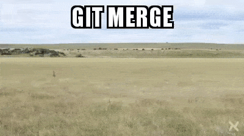
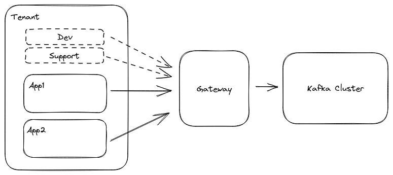

<!doctype html>
<html>
<head>
    <meta charset="utf-8">
    <meta name="viewport" content="width=device-width, initial-scale=1.0, maximum-scale=1.0, user-scalable=no">

    <title>Multi-Tenancy with Kafka</title>

    <link rel="stylesheet" href="https://cdnjs.cloudflare.com/ajax/libs/reveal.js/3.8.0/css/reset.min.css">
    <link rel="stylesheet" href="https://cdnjs.cloudflare.com/ajax/libs/reveal.js/3.8.0/css/reveal.min.css">
    <link rel="stylesheet" href="./dist/theme/mine.css" id="theme">
    <link href="custom.css" rel="stylesheet">

</head>
<body>
<div class="reveal">
    <div class="slides">
        <section data-markdown data-separator="---" data-separator-vertical="^\n--\n$" data-state="black-bg" >
            <script type="text/template">

<!-- .slide: class="slide-text-shadow black-bg" data-background-opacity="0.9" data-background-image="https://raw.githubusercontent.com/quantixx/template-presentation/master/images/2023/Backgrounds/image3.jpg" -->
# Multi-Tenancy & Kafka
## April 2023
## Devoxx*FR*

--

# Speakers

--

<div style="float:right; width: 200px">
    
    
</div>

# *Florent*
# Ex Confluent
# *Conduktor*
# Geek
# *@framiere*

--

<div style="float:right; width: 200px">
    
    
</div>

# *François*
# Ex Elastic/StarTree
# *Conduktor*
# Über Geek
# *@fteychene*


---

<!--.slide: class="slide-text-shadow" data-background-opacity="0.7" data-background-image="https://images.unsplash.com/photo-1490730141103-6cac27aaab94?ixlib=rb-4.0.3&ixid=MnwxMjA3fDB8MHxwaG90by1wYWdlfHx8fGVufDB8fHx8&auto=format&fit=crop&w=1740&q=80" -->
# Kafka is awesome ❤️️ <!-- .element: style="color:white" -->

--


--

<!-- .slide: class="center" -->
## But ...


# You want <!-- .element: class="fragment" data-fragment-index="1" --> **more** <!-- .element: class="fragment" data-fragment-index="1" -->

 <!-- .element: class="fragment" data-fragment-index="1" -->

---

<!--.slide: class="slide-text-shadow" data-background-opacity="0.7" data-background-image="https://images.unsplash.com/photo-1600689882600-eaa063a0cfcc?ixlib=rb-4.0.3&ixid=MnwxMjA3fDB8MHxwaG90by1wYWdlfHx8fGVufDB8fHx8&auto=format&fit=crop&w=1452&q=80" -->

# Multi <!-- .element: style="color:white" -->
<h1 style="float:right; color: white">tenancy</h1>

--


# Chat GPT is the new Wikipedia

--

### Multi-tenancy is a *software architecture* in which a single instance of an application serves multiple customers, known as tenants. 
### Each tenant has its own *isolated data* and configuration, but *shares* the same infrastructure.
### However, it also requires careful design and implementation to ensure that data is *properly* secured and isolated between tenants.

--

# *Meh*, we're not any further ahead

--

# Let's talk about the *pains* then

--

# Multi-tenancy is for
# either *large enterprises*
# or *compliance*

--

# We seem to be at *loss*...

---

<!--.slide: class="slide-text-shadow" data-background-opacity="0.6" data-background-image="https://images.unsplash.com/photo-1608503120873-61c4643f96b1?ixlib=rb-4.0.3&ixid=MnwxMjA3fDB8MHxwaG90by1wYWdlfHx8fGVufDB8fHx8&auto=format&fit=crop&w=1740&q=80"-->
# Back to  <!-- .element: style="float: right"--> *Kafka*

--

# Kafka is *awesome* 
# *... but* <!-- .element: class="fragment" -->
# Houston we have a problem <!-- .element: class="fragment" -->

--

# s/problem/*problems*/

--

# Problem *#1*
# *Multiple Teams*

--

# Per Projects
# *Per Partners* <!-- .element: class="fragment" -->
# Per Business Units <!-- .element: class="fragment" -->
# *Per Software Vendors* <!-- .element: class="fragment" -->

--

# Problem *#2*
# *Multiple Environments*

--

# Dev
# *PreProd* <!-- .element: class="fragment" -->
# UAT <!-- .element: class="fragment" -->
# *Prod* <!-- .element: class="fragment" -->

--

# Problem #*3*
# *Multiple Clients* 

--

# Java
# *C#* <!-- .element: class="fragment" -->
# TypeScript <!-- .element: class="fragment" -->
# *Rust* <!-- .element: class="fragment" -->

--

# Problem *#3.5*
# Multiple *UIs*

--

# CLI
# *AKHQ* <!-- .element: class="fragment" -->
# CCloud <!-- .element: class="fragment" -->
# *Conduktor* <!-- .element: class="fragment" -->

--

# Problem *#4*
# *Multiple Requirements*

--

# Perf
# *Retention* <!-- .element: class="fragment" -->
# Msg Size <!-- .element: class="fragment" -->
# *Encryption* <!-- .element: class="fragment" -->

--

# Problem *#5*
# *Multiple Security Schemes*

--

# Open Bar
# *OAuth* <!-- .element: class="fragment" -->
# TLS <!-- .element: class="fragment" -->
# *Kerberos* <!-- .element: class="fragment" -->

--

# Problem *#6*
# *Multiple Kafka Providers*

--

# Kafka
# *MSK IAM* <!-- .element: class="fragment" -->
# Confluent Rbac <!-- .element: class="fragment" -->
# *RedPanda WASM* <!-- .element: class="fragment" -->

--

# Problem *#7*
# *Multiple Versions*

--

# 1.x
# *2.x* <!-- .element: class="fragment" -->
# 3.x <!-- .element: class="fragment" -->
# *Kafka "compatible"* <!-- .element: class="fragment" -->

--

# Problem *#8*
# *Multiple Monitoring*

--

# Kafka JMX
# *MSK* <!-- .element: class="fragment" -->
# Confluent API <!-- .element: class="fragment" -->
# *RedPanda* <!-- .element: class="fragment" -->

--

# Problem *#9*
# *Multiple Cost Structure*

--

# Free
# *Per Cluster* <!-- .element: class="fragment" -->
# Per Broker <!-- .element: class="fragment" -->
# *Per Usage* <!-- .element: class="fragment" -->

--

# Problem *#10*
# *Multiple Team Maturies*

--

# Newbie
# *Experienced* <!-- .element: class="fragment" -->
# Geeks <!-- .element: class="fragment" -->
# *Wrong tech* <!-- .element: class="fragment" -->

--

# Problem *#11*
# *Multiple GitOPS*

--

# Handmade
# *ns4Kafka* <!-- .element: class="fragment" -->
# JulieOps <!-- .element: class="fragment" -->
# *Software Vendor* <!-- .element: class="fragment" -->

--

# Ok we get it *...*

---

<!--.slide: class="slide-text-shadow" data-background-opacity="0.6" data-background-image="https://images.unsplash.com/photo-1609349239791-53cf7964978f?ixlib=rb-4.0.3&ixid=MnwxMjA3fDB8MHxwaG90by1wYWdlfHx8fGVufDB8fHx8&auto=format&fit=crop&w=1740&q=80"-->
# Back to *multi-tenancy*



--

<blockquote style="width:100%; color: white">
    <strong>Multi-tenancy is a software architecture in which a single instance of an application serves multiple customers, known as tenants.</strong>
</blockquote>

*Thanks ChatGPT*

--

# What is a **tenant** in Kafka ?

--

# A **tenant** is the smallest **unit of isolation** you want to apply based on your organisation
Conway's law, yada yada

--

<!-- .slide: class="center" -->
# **Isolation for ?**
## Data <!-- .element: class="fragment" -->
## Constraints <!-- .element: class="fragment" -->
## Practice enforcement <!-- .element: class="fragment" -->
## Cost <!-- .element: class="fragment" -->
## ... <!-- .element: class="fragment" -->

--

<!-- .slide: class="center" -->
# Adapt and optimize Kafka to your organization

--- 

<!--.slide: class="center slide-text-shadow" data-background-opacity="0.4" data-background-image="https://images.unsplash.com/photo-1512909006721-3d6018887383"-->
# Our use-case : **Conduktor playground**


--

## Let's provide a playground kafka cluster to every customers

--

<!--.slide: class="center" -->


--

## Let's provide a ~playground kafka cluster~ to every ~customers~
## Let's provide a **cluster/topic/...** to every **team/user/...**
## Let's provide a <!-- .element: class="fragment" data-fragment-index="1"--> **Kafka ressource**<!-- .element: class="fragment" data-fragment-index="1"--> to every <!-- .element: class="fragment" data-fragment-index="1"--> **Tenant** <!-- .element: class="fragment" data-fragment-index="1"-->

--

# Where do we start ?

---

<!--.slide: class="center slide-text-shadow" data-background-opacity="0.9" data-background-image="https://images.unsplash.com/photo-1525119257764-35ca8b725677?ixlib=rb-4.0.3&ixid=MnwxMjA3fDB8MHxwaG90by1wYWdlfHx8fGVufDB8fHx8&auto=format&fit=crop&w=2070&q=80"-->
# Let's find a solution for 
# *Data isolation*

--

# Always start with *Training*

--

# Then bring *Experience*

--

# Then *build* Documentation

--


# Then focus on *Convention*

--

# Try per *Topic* 

--

# Try with Custom *Partitioner*

--

# Or relying on *Headers* 

--


# And try *Gitops* / Multiple cluster

--


--


# Or try *Common Library*

--


--


# Or create *Broker Policy plugins*
# Or <!-- .element: class="fragment" data-fragment-index="1" --> *just* <!-- .element: class="fragment" data-fragment-index="1" --> extend Kafka 

--


--

<!-- Maybe we don't need this one-->
# Or Suffer with *Status Quo*

--

# All these solutions are *partial*
### (at best)

---

<!--.slide: class="slide-text-shadow" data-background-opacity="0.4" data-background-image="https://images.unsplash.com/photo-1484069560501-87d72b0c3669?ixlib=rb-4.0.3&ixid=MnwxMjA3fDB8MHxwaG90by1wYWdlfHx8fGVufDB8fHx8&auto=format&fit=crop&w=1740&q=80"-->
# So, *what* can we do?

--

# If we can’t *trust* humans
# If we can’t *touch* Kafka

--

# Your *only* option is
# *adding magic*  <!-- .element: class="fragment" -->
# ... between clients and Kafka! <!-- .element: class="fragment" -->

--

# *Why*?

--

# To add the features Kafka is *currently lacking*

--

# *How*?

--

# By *extending the Kafka Protocol*
# kafka.apache.org/protocol  <!-- .element: class="fragment" -->

--

# *Intercept* messages

--

# It's *easy* right?
<pre>
    <code class="language-plantuml">
        @startuml
        autonumber
        skinparam handwritten true
        actor Client
        control Kafka
        Client -> Kafka : Send data
        Client -> Kafka : Consume data
        @enduml
    </code>
</pre>

--

# Cluster *Metadata*
<pre>
    <code class="language-plantuml">
        @startuml
        autonumber
        skinparam handwritten true
        actor Client
        control Broker1
        control Broker2
        control Broker3
        Client -> Broker1 : Hello!
        Broker1 -> Client : Hi there! I'm here with my other broker buddies!
        Client -> Client : Where shall I send this data?
        Client -> Broker3 : Send data
        @enduml
    </code>
</pre>

--

# Let's add a *gateway*
### *(_yes_, you can spare 2 or 3 ms)*
<pre>
    <code class="language-plantuml">
        @startuml
        autonumber
        skinparam handwritten true
        actor Client
        control Gateway
        control Broker1
        control Broker2
        control Broker3
        Client -> Gateway : Hello!
        Gateway -> Broker1 : Hello!
        Broker1 -> Gateway : Hi there! The cluster is broker1:9092, broker2:9092, broker3:9092
        Gateway -> Client : Hi there! The cluster is broker1:9092, broker2:9092, broker3:9092
        Client -> Client : Where shall I send this data?
        @enduml
    </code>
</pre>

--

# Damned! 
### It *bypassed* my lovely Gateway 
<pre>
    <code class="language-plantuml">
        @startuml
        autonumber
        skinparam handwritten true
        actor Client
        control Gateway
        control Broker1
        control Broker2
        control Broker3
        Client -> Gateway : Hello!
        Gateway -> Broker1 : Hello!
        Broker1 -> Gateway : Hi there! The cluster is broker1:9092, broker2:9092, broker3:9092
        Gateway -> Client : Hi there! The cluster is broker1:9092, broker2:9092, broker3:9092
        Client -> Client : Where shall I send this data?
        Client -> Broker3 : Send data
        Client -> Client : Damned my Gateway is not used!
        @enduml
    </code>
</pre>

--

# Let's *rewrite* metadata
<pre>
    <code class="language-plantuml">
        @startuml
        autonumber
        skinparam handwritten true
        actor Client
        control Gateway
        control Broker1
        control Broker2
        control Broker3
        Client -> Gateway : Hello!
        Gateway -> Broker1 : Hello!
        Broker1 -> Gateway : Hi there! The cluster is broker1:9092, broker2:9092, broker3:9092
        Gateway -> Client : Hi there! The cluster is gateway:6969, gateway:6970, gateway:7071
        Client -> Client : Where shall I send this data?
        Client -> Gateway : Send data to gateway:6971
        Gateway -> Broker3 : Send data to gateway:6971
        Client -> Client : Hourray!
        @enduml
    </code>
</pre>

--

<!--.slide: class="slide-text-shadow" data-background-opacity="0.4" data-background-image="https://images.unsplash.com/photo-1519834785169-98be25ec3f84?ixlib=rb-4.0.3&ixid=MnwxMjA3fDB8MHxzZWFyY2h8NXx8c3VjY2Vzc3xlbnwwfHwwfHw%3D&auto=format&fit=crop&w=800&q=60"-->

# *Success*!

--

# Wait... we *just* need to filter data based on a tenant?

--

# Does it work in *real life* ?

--


--

# Okay, okay ...
# But does it work at <!-- .element class="fragment" -->*scale* ?

--

# *Conduktor playground*
# handles more than 
# 4000 *isolated* tenants
# ... on a <!-- .element class="fragment" --> *single* cluster!

--

### Playground is powered by
# *Conduktor gateway*
## A proxy layer over Kafka to add _features_



--

# Is there *other* such ideas out there?

--

# GrepLabs <a href="https://github.com/grepplabs/kafka-proxy">#</a>
# *Envoy <a href="https://www.envoyproxy.io/docs/envoy/latest/configuration/listeners/network_filters/kafka_broker_filter">#</a>*
# Dajudge <a href="https://github.com/dajudge/kafkaproxy">#</a>
# *EventHub for Kafka* <a href="https://learn.microsoft.com/en-us/azure/event-hubs/azure-event-hubs-kafka-overview">#</a>

--

<!-- .slide: data-background-opacity="0.5" data-background-image="https://images.unsplash.com/photo-1538166261293-9230c2a7ee36?ixlib=rb-4.0.3&ixid=MnwxMjA3fDB8MHxwaG90by1wYWdlfHx8fGVufDB8fHx8&auto=format&fit=crop&w=1740&q=80"-->
# Data isolation is _not_ easy to code

---


<!--.slide: class="slide-text-shadow" data-background-opacity="0.4" data-background-image="https://images.unsplash.com/photo-1534551767192-78b8dd45b51b?ixlib=rb-4.0.3&ixid=MnwxMjA3fDB8MHxwaG90by1wYWdlfHx8fGVufDB8fHx8&auto=format&fit=crop&w=1740&q=80"-->
# Now that we're in the protocol ...
# *What else can we do?* <!-- .element: class="fragment" -->

--

# In *previous* slides

### ~Data~
### Constraints
### Practice enforcement
### Cost

--

# Constraints ?
# *Apply rules*

--

# Create topic *policy*
## *naming convention* <!-- .element: class="fragment" -->
## nb partitions <!-- .element: class="fragment" -->
## *min.isr* <!-- .element: class="fragment" -->
## replication factor <!-- .element: class="fragment" -->
## *retention* <!-- .element: class="fragment" -->

--

# Same for *alter* topic!

--

# Produce *checks*
## ack <!-- .element: class="fragment" -->
## *headers* <!-- .element: class="fragment" -->
## compression <!-- .element: class="fragment" -->
## *schema* <!-- .element: class="fragment" -->
## batch.size <!-- .element: class="fragment" -->

--

# Consume *checks*
## limit client <!-- .element: class="fragment" -->
## *limit connections* <!-- .element: class="fragment" -->
## limit offset commit <!-- .element: class="fragment" -->
## *limit join group* <!-- .element: class="fragment" -->

--

# Let's *assert* messages
 <!-- .element: class="fragment" -->

--

# *Security* ?

## Rbac <!-- .element: class="fragment" -->
## *Encryption* <!-- .element: class="fragment" -->
## Data Masking <!-- .element: class="fragment" -->
## *Audit* <!-- .element: class="fragment" -->

--

# Best *practices* ?

## Safeguard  <!-- .element: class="fragment" -->
## *Transformation* <!-- .element: class="fragment" -->
## Chaos  <!-- .element: class="fragment" -->
## *Claim Check* <!-- .element: class="fragment" -->

--

# *Cost* opimization ?

## Virtual Cluster <!-- .element: class="fragment" -->
## *Caching* <!-- .element: class="fragment" -->
## Partition Concentration <!-- .element: class="fragment" -->

--

# Provide an access to clusters that enforce your need
# *Adapt* a Kafka to multiple tenants

---

<!--.slide: class="slide-text-shadow" data-background-opacity="0.8" data-background-image="https://images.unsplash.com/photo-1650821289259-cb51d897d706?ixlib=rb-4.0.3&ixid=MnwxMjA3fDB8MHxwaG90by1wYWdlfHx8fGVufDB8fHx8&auto=format&fit=crop&w=1740&q=80"-->

# Could we solve our Kafka <!-- .element: style="color:white" class="r-fit-text fragment"--> _problems_ ? 

--

# *Problem:* Multiple Teams
# *Solution:* Virtualized clusters

--


# *Problem:* Multiple Environments
# *Solution:* virtualized clusters

--

# *Problem:* Multiple Clients
# *Solution:* Safe guard

--

# *Problem:* Multiple Requirements
# *Solution:* Safe guard / Caching / Encryption / Cold-Storage / Custom

--

# *Problem:* Multiple Security Schemes
# *Solution:* One single security plane

--

# *Problem:* Multiple Kafka Providers
# *Solution:* One single data plane

--

# *Problem:* Multiple Versions
# *Solution:* One single data plane

--

# *Problem:* Multiple Monitoring
# *Solution:* One single data plane

--

# *Problem:* Multiple Cost Structure
# *Solution:* One single data plane / Multi-tenancy / Cold Storage / Caching

--

# *Problem:* Multiple Team Maturies
# *Solution:* Multi-tenancy / Safeguard

---


# T*L*D*R*

--

# Multi-tenancy is *not only* data isolation
# It's the *tip of the iceberg*

--

# Multi-tenancy is a set of *rules and constraint* you want to apply to a *Kafka* for a *tenant*

--

## You could also want 
# *lineage* <!-- .element: class="fragment" -->
# discoverability <!-- .element: class="fragment" -->
# *costs reduction* <!-- .element: class="fragment" -->
# ownership <!-- .element: class="fragment" -->
# *simplicity* <!-- .element: class="fragment" -->
# reversability <!-- .element: class="fragment" -->
# *etc* <!-- .element: class="fragment" -->

--

# Basically,
# you want *and* need *more*!

--

# You are entering ...
# *data-mesh territory!* <!-- .element: class="fragment" -->

--

# You can solve this with a set of solutions *but ...* <!-- .element: class="fragment" -->

--

# Without a kafka gateway you are *doomed to eat dirt*

--

# We open-sourced a gateway you can *extend*

--

# Conduktor Gateway is the *ready to use* version of this talk for $

--

# Gateway enables you to 
# *rethink* your Kafka experience
### github.com/conduktor/conduktor-proxy-demos


---

<!-- .slide: class="center" data-background-opacity="0.9" data-background-image="https://images.unsplash.com/photo-1524623243236-187b50e18f9f?ixlib=rb-4.0.3&ixid=MnwxMjA3fDB8MHxwaG90by1wYWdlfHx8fGVufDB8fHx8&auto=format&fit=crop&w=2128&q=80" -->

<div>
    <h1 style="text-align: center"><strong class="text-shadow">Thanks</strong></h1>
    <div style="height: 100px">
        
        
        
    <div>
    <h2 style="text-align: center;">
        <a style="color: white;" href="https://github.com/conduktor/conduktor-gateway">Conduktor gateway ➚</a>
    </h2>
</div>

            </script>
        </section>
    </div>
</div>

<script src="https://cdn.jsdelivr.net/npm/mermaid/dist/mermaid.min.js"></script>
<script src="./dist/reveal.js"></script>
<script src="./plugin/notes/notes.js"></script>
<script src="./plugin/markdown/markdown.js"></script>
<script src="./plugin/highlight/highlight.js"></script>
<script src="./plugin/reveal.js-plantuml/reveal-plantuml.js"></script>
<script src="./plugin/reveal.js-extrernal-code/externalcode.js"></script>

<script>
Reveal.initialize({
 plantuml: {
      serverPath: 'https://plantuml.com/plantuml/svg/'
  } ,
  hash: true,
  plugins: [Externalcode, RevealMarkdown, RevealHighlight, RevealNotes]
})

</script>

</body>
</html>
